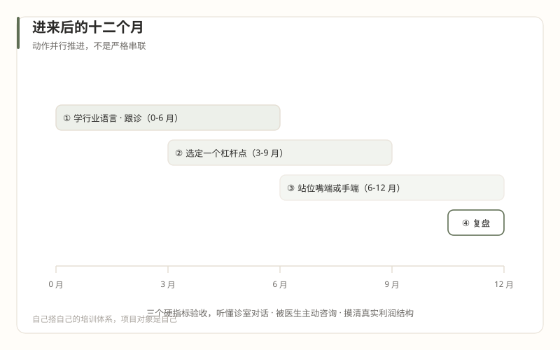

4名校生专题
名校生进来之后怎么做
本篇回答：如果决定进来，前 12 个月的动作序列。全篇条件判断式，不讲品格应然。

动作一（第 1-6 个月）：先当学生，用可检验的方式
学什么：行业语言。 医美行业有自己的语言层——解剖词汇、项目名、材料逻辑、审美语言——隔层的行话外行听不懂。好消息是这件事有现成教材：公开的六大医美科普系列约 160 篇（皮肤 55、注射 40、手术 31、亚美学 10、三型 10、腹壁 15），以及《医美咨询师成长教程》阶段 2 为零基础者排好的精读地图。按地图读，不必读完，读到能听懂诊室对话为止。
怎么验：一条底线标准。 "外行眼里的专家、医生眼里不添乱的人"（这个标准沿用咨询师教程的设计，其语料依据是行业"回归医疗"后非医疗人员的角色边界，2020-06-23）。具体的检验动作：每周至少两次跟诊（坐在面诊室角落听医生和客人的完整对话），记跟诊笔记，请医生纠正。纠正的频率在下降，就是学进了；一直被纠正同一个概念，就是没学进。
为什么是六个月： 名校生最容易在第 6 周犯"我懂了"的错（第 14 篇代价三）。六个月的跟诊不是浪费时间，是用行业的实际运转覆盖你脑中的行业模型——两者差距越大，这六个月越值。
动作二（第 3-9 个月，与动作一并行）：找到杠杆点，只选一个
第 07 篇的资产清单在这里用起来：数据分析、内容与 IP 运营、流量实操、流程与 SOP——四项里选一项做主攻。选择标准不是哪项最光鲜，是哪项同时满足两个条件：你有相对优势（对照同机构的人，不是对照大厂同事）；机构有真实需求（对照第 06 篇，机构采购的只有获客和客户经营相关的几角）。
选好之后，套用第 08 篇的活法框架给自己定位：
- 活法一（绝对实力碾压）对你不成立——接受它，医疗端的手艺没有捷径；
- 活法二（局部新套路）是你的主攻方向——在选定的一角做出"老人确实看不懂、但确实有效"的东西：客户数据的手工治理、医生 IP 的合规内容化、随访流程的 SOP 化，都够新、都够局部、都够真；
- 活法三（用圈子里的人做事）是你的杠杆——让资深的咨询师、护士长、营销老手成为你的老师兼队友，为此付出的成本（薪酬、话语权、面子）是这一行的正常学费。
动作三（第 6-12 个月）：选择站位，并接受它的定价
第 02 篇的结构在这里变成一道必答题：你站在"消费的嘴"，还是靠近"医疗的手"？
| 站在嘴端 | 靠近手端 | |
|---|---|---|
| 典型岗位 | 投放、电商运营、活动策划 | 医生 IP、医务助理方向、客户经营、随访体系 |
| 收益 | 离钱近，考核直接，见效快 | 离价值中枢近，信用积累深 |
| 风险 | 价值悖论的引信（第 02 篇），KPI 扭曲的暴露面大 | 收入天花板低、成长慢、岗位供给少 |
| 转场难度 | 嘴→手：难，需要重新证明 | 手→嘴：易，带信任背书 |
如实转述语料的立场：作者一派认为价值中枢终归医生端——"医生是医疗决策的唯一关键环节"（2020-06-23）、"离开经营院长可以，离开医生不行"（2019-04-16）。注意这是"回归医疗"派的观点，不是定律——第 12 篇摆过，靠嘴端吃饭的机构活得也很好，两种活法都真实存在。
所以站位的本质是个人定价：你赌行业的哪个未来、你愿意用哪种速度积累信用。没有对错，只有匹配——但要在入职第一年内想清楚，因为两个位置的时间成本都高，来回换的沉没成本更高。
动作四（第 12 个月）：用硬指标复盘，不用感觉
一年到了，别用"我感觉学到了很多"交卷。三个硬指标，全部可检验：
- 听诊测试：随机抽一次跟诊，你能完整复述医生方案的逻辑（为什么选这个项目、为什么这个剂量、拒绝了什么诉求、为什么拒绝）——检验行业语言的掌握；
- 被咨询测试：医生是否开始主动向你咨询非医疗问题（内容、客户、流程）——这是信任的领先指标（第 11 篇：信任先于流程存在），被咨询的次数就是你的信用余额；
- 账本测试：你能不依赖财务数据、凭观察和交叉询问，大致说清所在机构的真实利润结构（哪些项目养家、哪些项目引流、渠道吃掉多少）——检验你对"生意"的理解（第 03 篇：多数从业者自己也说不清这件事）。
三个都过，你在这一年的实际所得，超过多数在这个行业泡了三年的人。任何一个没过，第 13 篇的离开触发点清单拿来看一遍——不是让你走，是让你清醒地决定留。
翻译器：新人培养体系 → 没有体系
直译（成立处）：两边都有"新人期"的概念，都有导师制的外形（医生、咨询主管事实上会带你）。
失真处：大厂的新人期是一套系统——入职培训、导师配对、保护性的考核宽限期、明确的转正标准。这里没有系统，只有碎片：有人愿意教你，是你运气好；没人管你，是常态。你的成长不会被任何流程兜底。
大厂人的典型错误：等公司安排学习，等转正答辩证明自己。在 这里，转正答辩的考官可能自己也没读过一份行业报告。自己搭自己的培训体系——这是你入职后的第一个项目，项目对象是自己，交付物是一年后的你。
键盘 ← → 可翻篇，手机屏幕左右边缘滑动同样有效